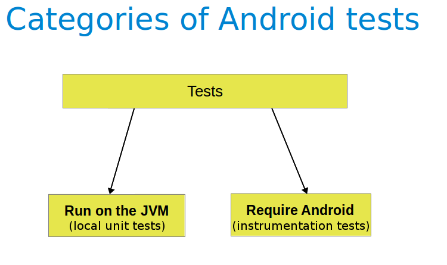

通过系统化的测试方法尽可能地发现软件错误，提高软件质量。
Meet应用
Ubuntu 14.04.1
品牌：华为
型号：H30-U10
CPU：Quad core 1.3 GHz
RAM：2.0GB
分辨率：720 * 1280
安卓版本：4.2.2
内核版本：3.4.5
作者：yfy
版本号：1
更新时间：2015.12.10
列出需要测试的功能点，人工测试该功能是否正常。
功能点：
测试显示在合适的条件下，以上功能正常。
JUnit 4-compatible test runner for Android. It allows you to create and run instrumented unit tests.

UI testing framework; suitable for functional UI testing within an app.
通过Espresso用代码实现用户输入，如打字，点击，滑动，使用AndroidJunit的API进行一些断言测试。例如：
// Open drawer
onView(withContentDescription(getString(R.string.navigation_drawer_open))).perform(click());通过view的描述获取该view，执行点击操作。这里功能是打开导航栏。
// Swipe
onView(withId(R.id.appListView)).perform(swipeUp());通过view的id获取该view，向上滑动。这里功能是对一个ListView向上滑屏幕，可以看到ListView下面的内容。
// Check title ubma
assertEquals(toolbar.getTitle(), getString(R.string.ubma_title));检查toolbar的标题是否正确。
测试模拟用户正常操作，结果显示程序执行正常，所有断言通过，耗时17s54ms。附视频。
控制台输出：
Testing started at 9:04 PM ...
Installing sjtu.se
DEVICE SHELL COMMAND: pm install -r "/data/local/tmp/sjtu.se"
pkg: /data/local/tmp/sjtu.se
Success
Uploading file
local path: /home/yfy/AdvancedSE/meet/code/Meet/meet/build/outputs/apk/meet-debug-androidTest-unaligned.apk
remote path: /data/local/tmp/sjtu.se.test
Installing sjtu.se.test
DEVICE SHELL COMMAND: pm install -r "/data/local/tmp/sjtu.se.test"
pkg: /data/local/tmp/sjtu.se.test
Success
Running tests
Test running startedFinish
Fuzz testing or fuzzing is a software testing technique, often automated or semi-automated, that involves providing invalid, unexpected, or random data to the inputs of a computer program.
The Monkey is a program that runs on your emulator or device and generates pseudo-random streams of user events such as clicks, touches, or gestures, as well as a number of system-level events. You can use the Monkey to stress-test applications that you are developing, in a random yet repeatable manner.
./adb shell monkey -p sjtu.se -v 10000
-p表示包名，仅在指定的包内进行测试。
-v表示verbose，显示详细信息。
10000表示执行10000个动作。
输出内容很多，这里显示一部分内容
:Sending Touch (ACTION_UP): 0:(112.7074,1115.5038)
:Sending Trackball (ACTION_MOVE): 0:(1.0,-4.0)
:Sending Touch (ACTION_DOWN): 0:(198.0,347.0)
//[calendar_time:2015-12-10 17:10:27.192 system_uptime:2217926161]
// Sending event #9900
:Sending Touch (ACTION_UP): 0:(109.5063,328.66043)
:Sending Touch (ACTION_DOWN): 0:(202.0,886.0)
:Sending Touch (ACTION_UP): 0:(211.18405,896.37)
// Rejecting start of Intent { act=android.intent.action.MAIN cat=[android.intent.category.HOME] cmp=com.huawei.android.launcher/.Launcher } in package com.huawei.android.launcher
:Sending Touch (ACTION_DOWN): 0:(275.0,652.0)
:Sending Touch (ACTION_UP): 0:(258.7679,601.2341)
:Switch: #Intent;action=android.intent.action.MAIN;category=android.intent.category.LAUNCHER;launchFlags=0x10200000;component=sjtu.se/.Activity.Search.Search;end
// Allowing start of Intent { act=android.intent.action.MAIN cat=[android.intent.category.LAUNCHER] cmp=sjtu.se/.Activity.Search.Search } in package sjtu.se
:Sending Touch (ACTION_DOWN): 0:(315.0,1267.0)
:Sending Touch (ACTION_UP): 0:(363.5855,1262.1498)
:Sending Touch (ACTION_DOWN): 0:(691.0,462.0)
:Sending Touch (ACTION_UP): 0:(693.4022,467.48196)
:Sending Touch (ACTION_DOWN): 0:(695.0,689.0)
:Sending Touch (ACTION_UP): 0:(691.6214,633.60834)
:Sending Touch (ACTION_DOWN): 0:(177.0,484.0)
:Sending Touch (ACTION_UP): 0:(174.77145,483.92554)
:Sending Trackball (ACTION_MOVE): 0:(4.0,-2.0)
:Sending Touch (ACTION_DOWN): 0:(470.0,57.0)
:Sending Touch (ACTION_UP): 0:(466.1036,62.241554)
:Sending Trackball (ACTION_MOVE): 0:(-4.0,-3.0)
:Sending Touch (ACTION_DOWN): 0:(342.0,692.0)
:Sending Touch (ACTION_UP): 0:(342.302,689.30194)
// Rejecting start of Intent { act=android.intent.action.MAIN cat=[android.intent.category.HOME] cmp=com.huawei.android.launcher/.Launcher } in package com.huawei.android.launcher
// activityResuming(com.android.mms)
// Rejecting resume of package com.android.mms
:Sending Trackball (ACTION_MOVE): 0:(1.0,3.0)
Events injected: 10000
:Sending rotation degree=0, persist=false
:Dropped: keys=6 pointers=26 trackballs=0 flips=0 rotations=0
## Network stats: elapsed time=37854ms (0ms mobile, 37854ms wifi, 0ms not connected)
// Monkey finished
dumpsys is an Android tool that runs on the device and dumps interesting information about the status of system services.
查看图形绘制信息：
./adb shell dumpsys gfxinfo sjtu.se
gfxinfo表示和图形绘制相关的信息。
sjtu.se表示显示这个应用的信息。
在Intellij中，也可以查看系统状态，有一些可视化的工具。
经数据分析和人工测试，本应用使用流畅，占用内存通常在10M到20M之间，可以接受。
Applications Graphics Acceleration Info:
Uptime: 972836010 Realtime: 2236530636
** Graphics info for pid 29401 [sjtu.se] **
Recent DisplayList operations
DrawDisplayList
Save
ClipRect
Translate
DrawText
RestoreToCount
DrawDisplayList
DrawRect
Save
ClipRect
Translate
DrawText
RestoreToCount
DrawDisplayList
DrawRect
Save
ClipRect
Translate
DrawText
RestoreToCount
DrawPatch
RestoreToCount
DrawRect
DrawDisplayList
Save
ClipRect
DrawDisplayList
DrawDisplayList
DrawDisplayList
DrawDisplayList
DrawRect
DrawDisplayList
DrawDisplayList
DrawDisplayList
DrawPatch
RestoreToCount
DrawRect
DrawDisplayList
Save
ClipRect
DrawDisplayList
DrawDisplayList
DrawDisplayList
DrawDisplayList
DrawRect
DrawDisplayList
DrawDisplayList
DrawDisplayList
DrawPatch
RestoreToCount
Caches:
Current memory usage / total memory usage (bytes):
TextureCache 4096 / 25165824
LayerCache 0 / 16777216
GradientCache 0 / 524288
PathCache 0 / 4194304
CircleShapeCache 0 / 1048576
OvalShapeCache 0 / 1048576
RoundRectShapeCache 0 / 1048576
RectShapeCache 0 / 1048576
ArcShapeCache 0 / 1048576
TextDropShadowCache 0 / 2097152
FontRenderer 0 262144 / 262144
Other:
FboCache 0 / 16
PatchCache 1 / 512
Total memory usage:
266240 bytes, 0.25 MB
Profile data in ms:
sjtu.se/sjtu.se.Activity.Search.Search/android.view.ViewRootImpl@41847208
Draw Process Execute
10.80 42.46 3.08
3.65 0.63 2.00
1.16 0.97 2.43
1.10 0.22 0.71
0.68 0.19 0.93
0.64 0.22 0.61
0.65 0.19 0.61
0.64 0.17 0.56
0.93 0.26 0.88
0.85 0.25 0.90
0.85 0.28 1.13
0.83 0.27 0.87
0.78 0.24 0.88
1.00 0.29 0.88
0.81 0.25 0.90
0.87 0.26 0.91
1.06 0.31 1.05
0.78 0.25 0.84
0.57 0.30 0.93
2.53 0.25 3.67
1.06 0.18 0.91
1.34 0.26 1.46
0.85 0.17 1.11
1.46 1.04 2.04
1.18 0.80 0.87
0.77 0.18 1.70
0.90 0.17 1.86
View hierarchy:
sjtu.se/sjtu.se.Activity.Search.Search/android.view.ViewRootImpl@41847208
19 views, 1.00 kB of display lists, 27 frames rendered
Total ViewRootImpl: 1
Total Views: 19
Total DisplayList: 1.00 kB
Applications Memory Usage (kB):
Uptime: 973197534 Realtime: 2236892160
** MEMINFO in pid 29401 [sjtu.se] **
Shared Private Heap Heap Heap
Pss Dirty Dirty Size Alloc Free
------ ------ ------ ------ ------ ------
Native 0 0 0 3372 3099 272
Dalvik 3174 4660 2660 10732 10014 718
Cursor 0 0 0
Ashmem 0 0 0
Other dev 4 56 0
.so mmap 1333 372 940
.jar mmap 0 0 0
.apk mmap 197 0 0
.ttf mmap 389 0 0
.dex mmap 1256 0 8
Other mmap 633 160 124
Unknown 1837 116 1828
TOTAL 8823 5364 5560 14104 13113 990
Objects
Views: 20 ViewRootImpl: 1
AppContexts: 5 Activities: 1
Assets: 4 AssetManagers: 4
Local Binders: 9 Proxy Binders: 17
Death Recipients: 0
OpenSSL Sockets: 0
SQL
MEMORY_USED: 0
PAGECACHE_OVERFLOW: 0 MALLOC_SIZE: 0
选取多台设备，人工进行测试。
设备列表：
测试显示以上设备可正常运行应用。更多机型有待测试。